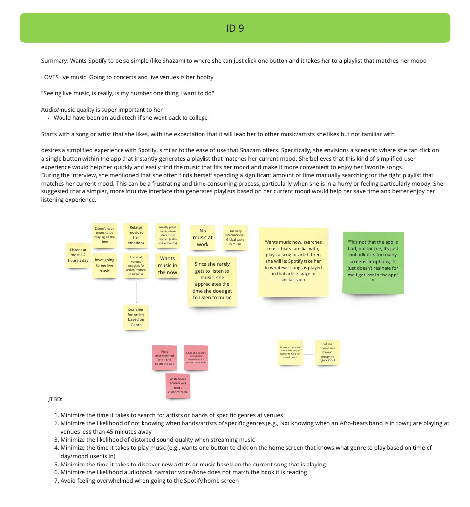
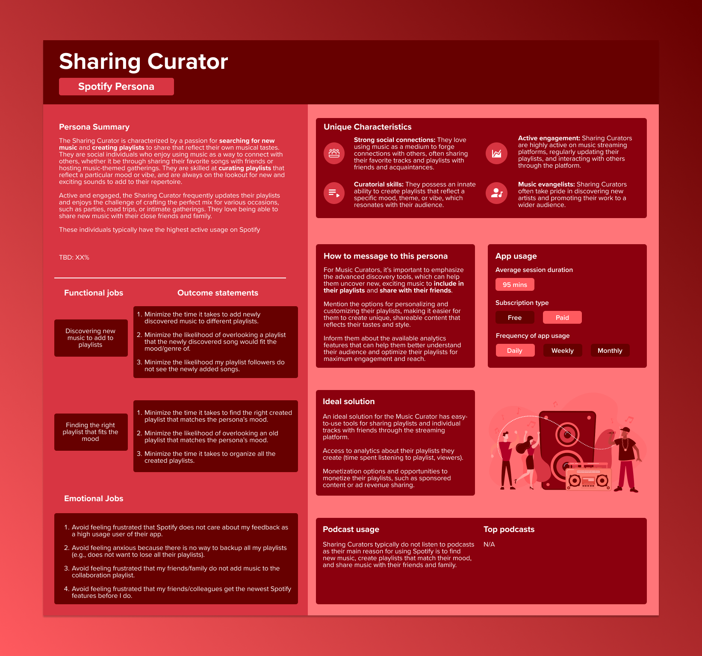
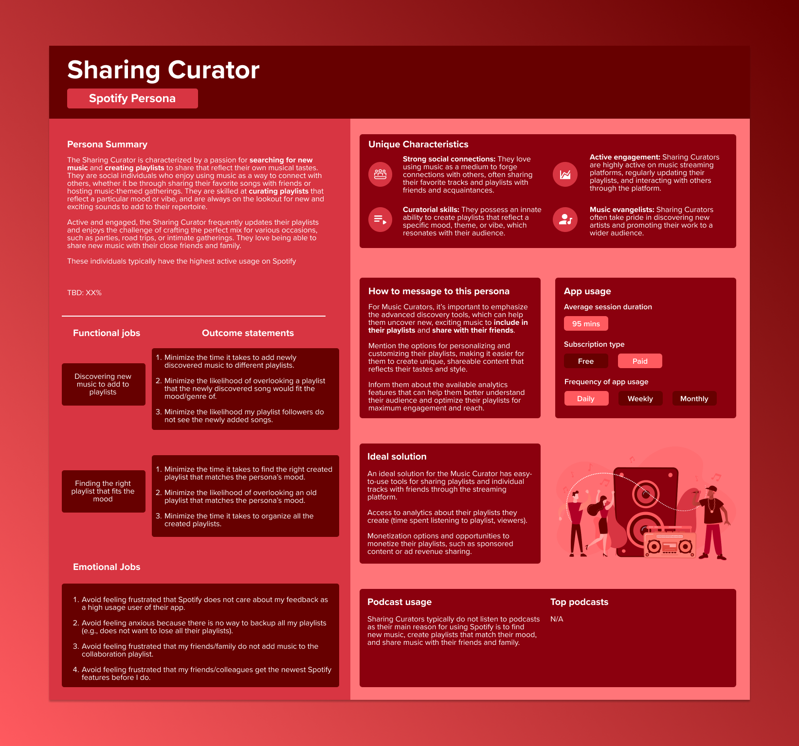

Context
- With the recent acquisitions of Sonantic & Findaway, Spotify is accelerating the development of their audiobook feature.
- With this in mind, business leaders want to understand what Spotify users an audiobook feature would fulfill the needs of.
- There is a need for a common aligned understanding of how users use, experience, and value the entire Spotify ecosystem.
Objectives
- Is there a segment of Spotify users who will benefit the most from an audiobook feature (e.g. will it address a key unmet need)?
- Do we at Spotify have a clear understanding of how users use our app?
- Do we understand users product use, their behaviors, attitudes toward music/audio, etc.?
Research approach
For this research, I used two qualitative research methods
- 1-1 remote interviews using JTBD qualitative interviewing.
- Ethnographic research with 3 participants.
Below is my rationale for why I chose to go with this research approach.

Ethnographic Research
- provides deep insights into how users interact with a product in their real-world context. This helps identify factors that may influence their behaviors and attitudes, which may not be evident in controlled research settings.
- Ethnographic research generates rich, qualitative data that can provide a nuanced understanding of users' experiences, motivations, and challenges.
- When there is budget, time, and ability to conduct Enthographic research, it is always more fun to observe people in their natural environments interact with the products/services :)
Jobs-to-be-Done
- JTBD research is centered on the user and their needs and motivations, rather than on the product or service itself. This can help you to gain a deeper understanding of the reasons why people use Spotify and what they hope to achieve by using the service.
- JTBD research can help to provide a richer understanding of the broader context in which people use Spotify, including the circumstances and situations in which they use the service.
- By focusing on the underlying job that people are trying to accomplish when using Spotify, JTBD research can reveal unmet needs or pain points that the service may not be addressing. This can help to inform product development and improve the user experience.
Recruitment Process
For this research I conducted 16 interviews (13 virtual via UserTesting and 3 in-person).
Below is a few demographic highlights from the sample
- The sample includes 10 females, 5 males, and 1 non-binary participant.
- The age range of the sample is 20-50.
- Age range 20-24: 2 participants
- Age range 25-29: 5 participants
- Age range 30-34: 2 participants
- Age range 35-39: 2 participants
- Age range 40-44: 2 participants
- Age range 45-50: 3 participants
- Median age of 27.5 and a mean age of 30.6
Research Synthesis
Following each interview, I generated a comprehensive report summarizing the participant's attitudes and behaviors towards their usage of Spotify. Specifically, I documented the key features that each individual used and explored the underlying goals that motivated their use of these features. To gain a better understanding of how Spotify was integrated into each individual's daily routine, I asked contextual questions that probed their usage habits. Utilizing this information, I grouped my notes into clusters based on the unmet needs that Spotify was addressing for each individual and the specific reasons behind their usage patterns.
After the 16 interviews, I was able to identify common themes, attitudes, and behaviors in the way people used Spotify. For example, a surpirse to me was that some individuals only used Spotify to find podcasts that narrated audiobooks for them. These individuals barely used Spotify for the music discovery or keeping a music library, but they loved being able to be immersed into a great audiobook.
Once these themes were identified, I started with the development of the personas. For the design, I wanted to highlight 7 key ways to differentiate them from one another. These 7 ways are below
- Persona Summary
- Functional and emotional jobs
- Unique characteristics
- How to message to this persona
- App usage
- Ideal solution
- Podcast usage
One more conscious decision I made for these personas was to make them different than the typical "consumer" or "buyer" personas. There is nothing wrong with these types of personas, but I wanted to create personas that were more based on the attitudes, behaviors, and unique unmet needs each persona. I always felt that the typical type of personas online are very surface level and don't go deep into truly understanding the user.
Below you can see the 6 personas that were developed based on my research findings.
Spotify Personas
 

Results
The results were that 6 unique Spotify personas came from the analysis of the research.
Here are some high level summaries of each persona.
- Audiobook Aficionado
- The Audiobook Aficionado is a devoted listener who primarily uses Spotify as a platform for consuming spoken-word content, with a particular emphasis on podcasts that narrates like an audiobook. This persona appreciates the immersive storytelling experience that audio narratives can provide and enjoys delving into captivating stories, characters, and worlds through the power of the spoken word.
- When it comes to music, the Audiobook Aficionado still enjoys a curated selection of tunes, often using music as a background accompaniment during their daily activities or as a way to unwind and relax. Their music preferences may be influenced by their taste in fiction, gravitating towards soundtracks or atmospheric tracks that complement their favorite stories.
- Curious Learner
- The Curious Learner uses Spotify 50/50 between listening to music and listening to primarily educational podcasts. They love to learn and educate themselves, which is why they enjoy listening to podcasts where they can learn something new.
- The Curious Learner is open to trying new podcasts and discovering new topics. They are always on the lookout for podcasts that cover niche subjects or offer unique insights into familiar topics. They also appreciate podcasts that incorporate humor and storytelling to make learning more engaging and enjoyable.
- The Curious listener likes to passively discover new music and finds playlists that match their mood. They typically have a few playlists that are their favorites and go to those whenever they want to listen to music.
- Pure Sound Seeker
- The Pure Sound Seeker is a discerning music lover who primarily uses Spotify as a platform to discover new music while prioritizing sound quality and the overall immersive experience. This persona deeply appreciates the craftsmanship and artistry behind music production and seeks to enjoy music in its purest form, as the artist intended it to be heard.
- They may invest in high-quality audio equipment, such as bose headphones or speakers, to further enhance their listening experience and ensure that they can fully appreciate the nuances of their favorite tracks.
- Sharing Curator
- The Sharing Curator is characterized by a passion for searching for new music and creating playlists to share that reflect their own musical tastes. They are social individuals who enjoy using music as a way to connect with others, whether it be through sharing their favorite songs with friends or hosting music-themed gatherings. They are skilled at curating playlists that reflect a particular mood or vibe, and are always on the lookout for new and exciting sounds to add to their repertoire.
- Active and engaged, the Sharing Curator frequently updates their playlists and enjoys the challenge of crafting the perfect mix for various occasions, such as parties, road trips, or intimate gatherings. They love being able to share new music with their close friends and family.
- Discovery Entertainment Enthusiast
- The Discovery Entertainment Enthusiast is a dedicated and passionate Spotify user who thrives on finding entertainment through sports and comedy podcasts, as well as discovering new music. With an insatiable curiosity for fresh content and a keen interest in staying up-to-date with the latest trends and releases, this persona embodies the adventurous spirit of an avid listener.
- Their use of the Spotify app is focused on two primary objectives: 1. immersing themselves in the world of entertaining podcasts, and 2. uncovering new and exciting music. They value the perfect balance of laughter and analysis provided by sports and comedy podcasts and appreciate the app's ability to introduce them to a vast array of new tunes.
- Simplified Mood Tracker
- The Simplified Mood Matcher persona is a music listener who values simplicity and convenience when it comes to accessing music. They primarily use Spotify to match their current emotional state or mood with a playlist that fits their needs. They may not be as interested in actively searching for new music or curating their own playlists, but value the ease and convenience of a pre-curated playlist that matches their mood.
- This persona is likely to engage in passive listening, letting Spotify's algorithmic recommendations take the lead. They enjoy a variety of genres and are open to new styles, as long as the music aligns with their current mood. They may listen to music while commuting, working, exercising, or unwinding at home.
Next Steps
The next steps of this project would be to quantify these personas so we can get an accurate market sizing for each and understand which persona to target as an early adopter for the new audiobook feature.
The "obvious" choices are the Audiobook Aficionado or potentially the Curious Learner, however, we would need to understand their expectations for an audiobook section as part of Spotify and if our offering is what they expect. Spotify could create an audiobook section in the app, but if it fails to deliver value for any persona, it could actually hurt Spotify's brand.
My assumption is Spotify did research prior to acquiring the audiobook startups with their current userbase on segmenting the market or creating personas to determine an early adopter to target for this feature and how to address their core needs.
Reflections and improvements for next time
Below is a list of improvements and suggestions I would make next time before conducting a qualitative persona project similar to this one.
- I had to stop interviewing at 16 due to limitations with UserTesting credits. Next time I would like to interview as many participants as needed until I hit data saturation. Similar to how academics do qualitative research, they keep going with interviews until they reach data saturation.
- In the real world, aligning with data scientists and looking at the actual product data of how people use a product would have been a great first step to help inform this research.
- The app usage section in the persona posters truthfully isn't that helpful from my perspective and the design is not the best. It's hard to tell with the shading which one the viewer is supposed to focus on. I kept this design flaw in here to highlight I'm not a perfect designer, nor will I ever be. I thrive working with a team of great people (designers, researchers, engineers, etc.) to bounce ideas off of and help make me better.